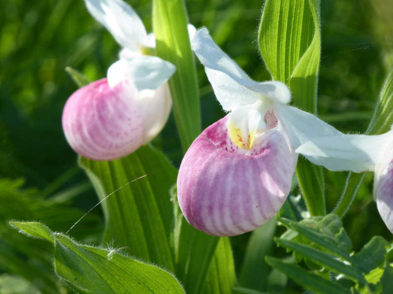
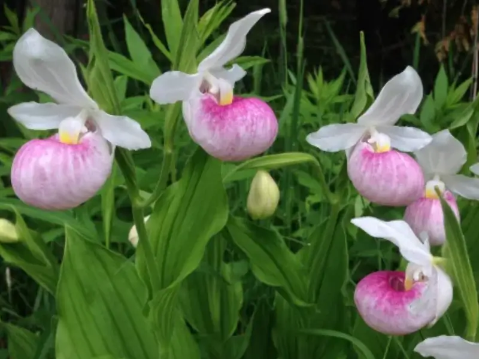
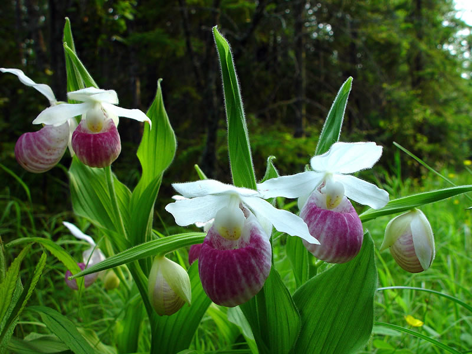
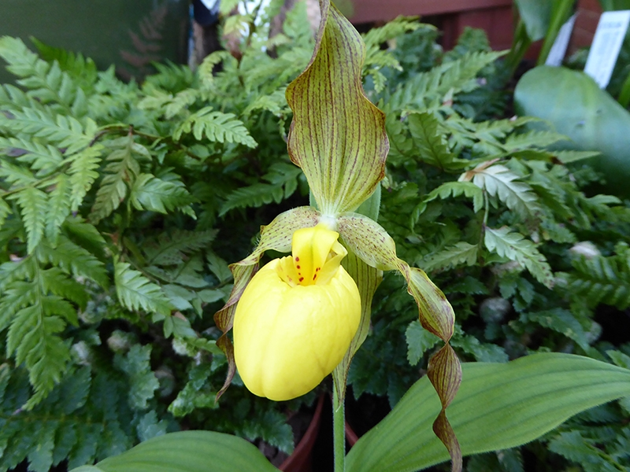

Meaning: Capriciousness
Origin
These orchids are famously fickle and difficult to cultivate. Some can take over a decade to bloom, and few survive transplantation. Others, however—if left undisturbed—can live for up to fifty years.
Gallery



